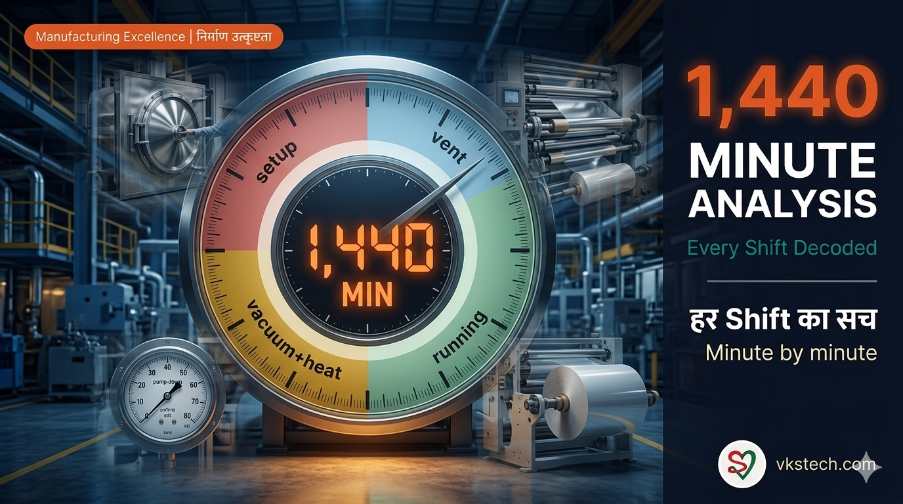
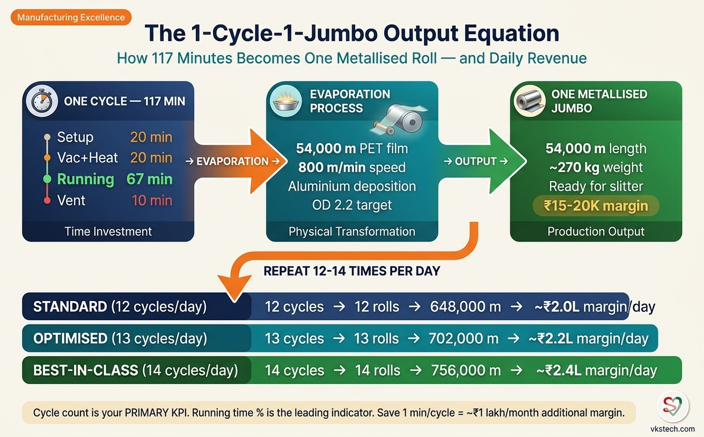
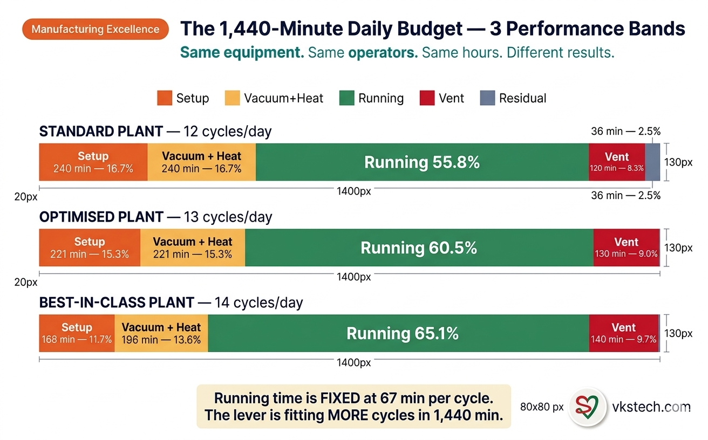
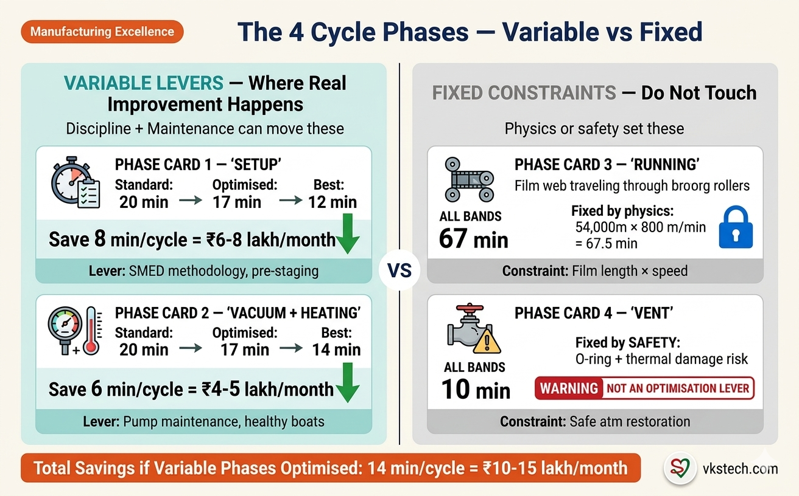
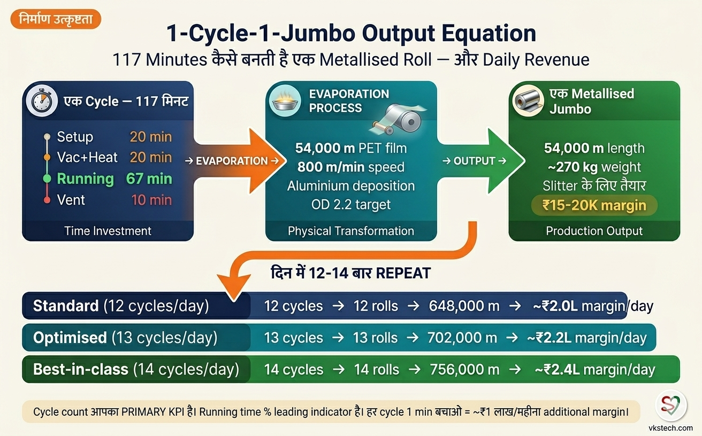
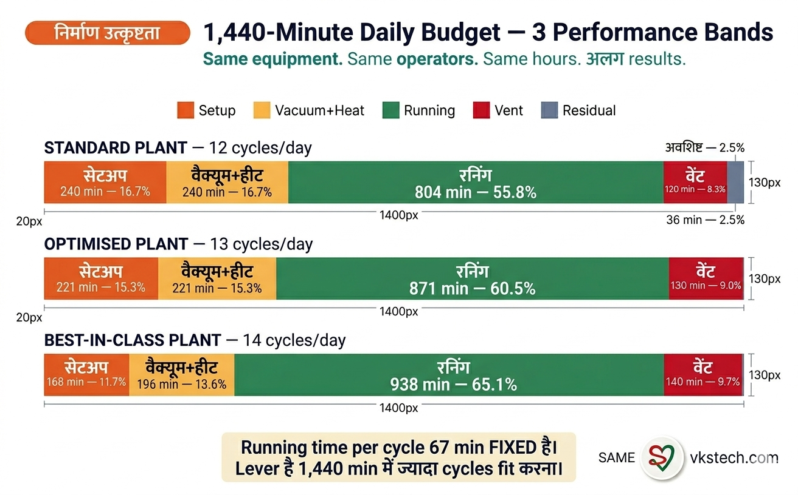

⏱️ 1,440-Minute Analysis — Every Metalliser Day Decoded
Your metalliser plant has exactly 1,440 minutes in a day. Twenty-four hours, no more, no less. Whether you run two 12-hour shifts or three 8-hour shifts, the total stays the same. Every minute either turns into metallised film or evaporates into something else. Most plant managers track these minutes loosely. They know roughly how many jumbos they made yesterday. They know roughly when the machine was down. But they do not know — minute by minute — where the day went.
This blog is the framework for finding out. It uses the four cycle phases that match your existing logbook structure: setup, vacuum and heating, running, and vent. Plus boat change as a periodic event, plus downtime as the residual catch-all. By the end of this blog, you will be able to look at your VKS/MET/F/01 logbook for any day and tell exactly where your minutes went, what your real running time percentage is, and which phase is your biggest improvement lever.
The math that follows assumes a typical Indian flexible packaging metalliser running average jumbos of 54,000 metres at 800 metres per minute. Your plant may run different jumbo lengths or speeds — the absolute numbers will shift slightly, but the framework holds for any configuration.
🎯 The Hard Math — Why Running Time Has a Ceiling
Let us start with the physics. Running a 54,000-metre jumbo at 800 metres per minute takes 67.5 minutes of pure evaporation time. That is non-negotiable — the film must pass through the chamber at that speed to deposit the correct optical density. Faster compromises OD; slower wastes wire and burns boats.
Around that 67-minute running window, every cycle has three other mandatory phases: setup, vacuum and heating, and vent. Setup means loading the bare film roll, threading the web path, fixing the metallised core, verifying the slitting plan, and recipe loading. Vacuum and heating means pumping down from atmospheric to operating vacuum (~8 × 10⁻⁴ mbar) while bringing the boats to evaporation temperature. Vent means safely returning the chamber to atmospheric pressure after the run, without damaging O-rings or hot components.
For a typical Indian metalliser, the standard cycle looks like this: 20 minutes setup, 20 minutes vacuum and heating, 67 minutes running, 10 minutes vent. That totals 117 minutes per cycle. Divide 1,440 by 117 and you get exactly 12.3 cycles per day theoretical maximum. In practice, plants targeting 12 cycles per day are working at the edge of standard performance.
The key insight every plant manager misses: the running time ceiling for a 12-cycle day is 55.8 percent, not the 70-80 percent that generic operations content claims. With 12 cycles × 67 minutes running = 804 minutes of pure evaporation in 1,440 minutes. That is the physical ceiling, not an aspirational number. To exceed it, you must either run more cycles per day or run longer jumbos per cycle. There is no third option.
🎯 1 Cycle = 1 Jumbo — The Output Math
Before diving into performance bands, let us state the most important relationship in this entire framework: each completed cycle produces exactly one metallised jumbo. This 1:1 mapping is what makes cycle count your most important production KPI. If you ran 12 cycles today and all of them completed normally, you produced 12 metallised rolls. If you ran 12 cycles but 2 were aborted partway, your roll count is 10 complete + 2 partial.
The output equation that follows directly:
Daily Length Output (m) = Σ (Length per cycle), where:
Complete cycle = full Jumbo Length
Partial/Aborted = Run Minutes × 800 m/min (capped at Jumbo Length)
No-Run = 0 metres
The benchmark length per day, assuming the standard 54,000-metre jumbo:
| Performance Band | Cycles per Day | Rolls Output | Length per Day (m) | Length per Month (m) |
|---|---|---|---|---|
| Standard plant | 12 | 12 rolls | 648,000 m | ~19.4 million m |
| Optimised plant | 13 | 13 rolls | 702,000 m | ~21.1 million m |
| Best-in-class | 14 | 14 rolls | 756,000 m | ~22.7 million m |
If your plant runs jumbos shorter than 54,000 metres (some customers demand 24,000-36,000 metre rolls), the daily length numbers shrink proportionally — but the cycle count target stays the same. The setup, vacuum, and vent times do not depend on jumbo length; only the running time per cycle scales with length.
Why this matters operationally: cycle count is your primary KPI; running time percentage is the leading indicator. A supervisor checking the floor at 5 PM should not be asking "what is our running percentage?" — too abstract. The right question is "how many cycles have we completed and how many are still possible before midnight?" That is actionable.

📐 The Three Performance Bands — Where Plants Actually Sit
Plants fall into three honest performance bands based on cycles per day and the resulting running time percentage. Here is what each band looks like with realistic times for each phase:
| Phase | Standard Plant (12 cycles/day) | Optimised Plant (13 cycles/day) | Best-in-Class (14 cycles/day) |
|---|---|---|---|
| Setup per cycle | 20 min | 17 min | 12 min |
| Vacuum + Heating per cycle | 20 min | 17 min | 14 min |
| Running per cycle | 67 min | 67 min | 67 min |
| Vent per cycle | 10 min | 10 min | 10 min |
| Total per cycle | 117 min | 111 min | 103 min |
| Cycles × per-cycle minutes | 1,404 min | 1,443 min | 1,442 min |
| Residual (boat change + downtime) | 36 min | — | — |
| Running Time per Day | 804 min | 871 min | 938 min |
| Running Time % | 55.8% | 60.5% | 65.1% |
Look at this table carefully. The difference between a standard plant and a best-in-class plant is not in running time itself — running time per cycle is fixed by physics. The difference is entirely in setup time and vacuum-plus-heating time. Cut 8 minutes from setup and 6 minutes from vacuum across every cycle, and you gain 2 extra cycles per day. Two extra jumbos. Roughly ₹3-4 lakh additional contribution margin per month from the same equipment.
The vent phase stays at 10 minutes across all bands. This is a safety boundary, not an optimisation lever. Rushing vent risks O-ring damage and exposes hot internal components to oxygen too quickly. Plants that pretend to "save 2 minutes" on vent eventually pay for it in repair costs and chamber leaks.

🔧 The Two Variable Phases — Where Real Improvement Happens
Setup time and vacuum-plus-heating time are the two phases where real plant-to-plant variation exists. Understanding what drives variation in each is the foundation of any improvement program.
Setup variation comes from operator discipline and pre-staging. A 20-minute setup typically includes 4-5 minutes of "fetching things" — bare roll from store, cores from the rack, recipe sheet from the supervisor, wrapping materials from the cabinet. None of this fetching needs to happen during stopped-machine time. A well-organised plant pre-stages everything next to the machine before the previous cycle ends. That alone cuts setup to 15 minutes. Going below 15 requires choreography between two operators working in parallel — see the SMED methodology for the framework.
Vacuum-and-heating variation comes from equipment health. A well-maintained pump system with low chamber leakage achieves operating vacuum in 12-13 minutes. A neglected system with worn pump seals and small leaks may take 25 minutes for the same task. Boat heating time varies similarly — fresh boats with clean copper clamp contacts reach evaporation temperature faster than aged boats with carbon-coated clamps. Plants that achieve 15-minute vacuum-and-heating typically have monthly preventive maintenance discipline and replace boats before they reach end-of-life. Plants stuck at 25 minutes are usually skipping maintenance and stretching boat life beyond the optimal window.
📊 The Cost of Each Variable Minute
Here is the rupee impact of every minute saved across these two variable phases:
One minute saved per cycle × 12 cycles per day × 30 production days = 360 minutes per month. At running time productivity (54,000 m / 67 min ≈ 800 m/min), that is roughly 290,000 metres per month, or 5-6 additional metallised jumbos. At ₹15,000-20,000 contribution margin per jumbo, that is ₹75,000 to ₹1,20,000 per month per minute saved per cycle.
Read that again. Every minute you cut from setup or vacuum-plus-heating, sustained across all cycles, generates close to one lakh rupees of monthly margin. The 8-minute setup reduction (from 20 to 12) and 6-minute vacuum reduction (from 20 to 14) that separates a standard plant from a best-in-class plant equals roughly 14 minutes of total cycle time savings, which translates to ₹10-15 lakh additional monthly margin from the same equipment.
This is not aspirational math. This is the cumulative effect of single-minute improvements at scale. The discipline gap between average plants and best plants is small in absolute terms — 14 minutes per cycle. But scaled across 360 cycles per month, it is enormous in revenue terms.

📋 The Boat Change Reality
Boat change is a periodic event, not a daily one. A typical TiB2-BN boat set lasts 50 to 150 hours depending on quality and operator discipline (see the Boat Life Optimization blog for detailed factors). When boats reach end of life, the entire set must be replaced — typically 30 to 60 minutes of fully stopped time depending on whether SMED principles have been applied.
On boat-change days, you lose roughly one cycle of production. A 60-minute boat change effectively replaces what would have been a normal cycle slot. So a boat-change day produces 11 cycles instead of 12 in a standard plant, or 13 cycles instead of 14 in a best-in-class plant. Across a typical month with 4-6 boat changes, this works out to a small but real reduction in monthly output. The trade-off is unavoidable — you cannot run beyond useful boat life without compromising quality.
The improvement opportunity here is making boat changes faster, not avoiding them. Plants applying SMED principles to boat change can reduce changeover time from 60 minutes to 30 minutes. That is half a cycle recovered every time boats are changed.
🔬 The Shift Autopsy Method — Find Your Real Numbers
Before you can improve anything, you must measure honestly. Most plants think they know their running time percentage. Almost none actually do. The Shift Autopsy is a 5-day rigorous tracking exercise that gives you the real numbers using your existing logbook.
Step 1: Use your existing VKS/MET/F/01 logbook. The logbook already captures vacuum start time, web start time, machine stop time, vent time, and downtime reasons. You do not need a new tracking system; you need to use the existing one rigorously.
Step 2: Track every cycle for 5 consecutive working days. One full work week. Every cycle, every shift, both metallisers if you have two. Make sure operators record start and stop timestamps for each phase precisely. Do not allow rounding to the nearest 5 minutes — that destroys the analysis.
Step 3: Categorise every minute into one of the buckets. At end of each day, go through the logbook and assign every minute to a phase. Setup is the gap between previous cycle end and current vacuum start. Vacuum and heating is from vacuum start to web start. Running is from web start to web stop. Vent is the documented vent duration. Boat change is documented separately if it happened. Downtime is everything else.
Step 4: Calculate per-phase totals. Sum each phase across the 5 days. Divide by 7,200 (5 days × 1,440 min). That gives you the percentage spent in each phase. Compare your numbers to the table above.
Step 5: Identify your top two improvement levers. If your setup time averages 25 minutes per cycle, that is your number-one lever. If your vacuum-and-heating averages 22 minutes, that is your number-two lever. Address them in that order.
Step 6: Apply phase-specific fixes. Setup time is improved through pre-staging and SMED methodology. Vacuum-and-heating time is improved through preventive maintenance discipline and proactive boat replacement. Vent time should not be touched. Downtime is investigated through root-cause analysis on the logbook reasons.
📅 3-Shift vs 2-Shift Configuration
The framework above assumes two 12-hour shifts per day, which is the most common configuration in Indian flexible packaging metalliser operations. For plants running three 8-hour shifts (480 minutes each), the daily total is still 1,440 minutes and all the math still holds. The only difference is that handover happens three times a day instead of twice, which adds slightly more setup-equivalent overhead at shift transitions.
Plants on 3-shift configuration typically see 5-10 minutes of additional non-productive time at each handover for thread-of-context, logbook signing, and operator briefing. Across three handovers, that is 15-30 minutes per day extra. So 3-shift plants typically achieve slightly lower cycle counts than equivalent 2-shift plants. The trade-off is that 3-shift operations have fresher operators and lower fatigue-related errors, especially at hour 11 of a 12-hour shift when concentration drops.
🔬 Common Questions From Plant Engineers
"My plant claims 80% running time. Is that real?" Almost certainly no. Either the calculation method is loose (counting setup as production), or the cycle count is being inflated, or running time is being measured against shift availability rather than 1,440 minutes. Run the Shift Autopsy honestly and the real number will surface. It will be in the 50-65% band for nearly every Indian metalliser.
"Can we get above 14 cycles per day?" Theoretically yes, but it requires either shorter jumbos (which most customers do not want), faster running speed (which compromises OD on most film types), or sub-10-minute setup with sub-12-minute vacuum (which approaches the physics floor and requires capex like faster pumps). For most plants, 14 cycles is the practical ceiling without significant equipment investment.
"Does this apply to AlOx or specialty metallisation?" The framework applies, but the numbers shift. AlOx coating runs at lower speeds (around 600 m/min) and has tighter quality margins, so cycle times stretch. Specialty films may also need longer setup for recipe verification. Adjust the per-cycle minutes for your specific configuration; the percentage analysis stays valid.
"What about scheduled maintenance days?" Maintenance days are excluded from this analysis. The 1,440-minute framework applies to production days only. A plant running 26 production days per month with 4 maintenance days has 26 × 1,440 = 37,440 production minutes to manage.
"How often should we run the Shift Autopsy?" Once per quarter is sufficient for established plants. If you are actively running an improvement program, do it monthly. Once running time stabilises in your target band, quarterly checks confirm sustained performance.
⏱️ 1,440-Minute Analysis — Metalliser के हर दिन को Decode करें
आपके metalliser plant में एक दिन में exactly 1,440 minutes होते हैं। चौबीस घंटे, न ज़्यादा न कम। चाहे आप दो 12-hour shifts चलाएँ या तीन 8-hour shifts, total वही रहता है। हर minute या तो metallised film बनती है, या किसी और चीज़ में evaporate हो जाती है। ज़्यादातर plant managers इन minutes को loosely track करते हैं। उन्हें roughly पता है कितने jumbos कल बने थे। उन्हें roughly पता है machine कब down थी। लेकिन उन्हें नहीं पता — minute by minute — दिन कहाँ गया।
ये blog वही framework है ये पता करने के लिए। ये उन चार cycle phases का use करता है जो आपके existing logbook structure से match करते हैं: setup, vacuum और heating, running, और vent। साथ में boat change एक periodic event की तरह, और downtime residual catch-all की तरह। इस blog के अंत तक आप किसी भी दिन के अपने VKS/MET/F/01 logbook को देखकर बता सकेंगे कि आपके minutes कहाँ गए, आपका real running time percentage क्या है, और कौन सा phase आपका सबसे बड़ा improvement lever है।
नीचे की math typical Indian flexible packaging metalliser को assume करती है जो average 54,000 metre jumbos 800 metres per minute पे चलाता है। आपके plant में jumbo length या speed अलग हो सकती है — absolute numbers थोड़े shift होंगे, पर framework किसी भी configuration के लिए valid रहता है।
🎯 कठोर Math — Running Time का एक Ceiling क्यों होता है
Physics से शुरू करते हैं। 800 metres per minute पर 54,000-metre jumbo चलाने में 67.5 minutes pure evaporation time लगता है। ये non-negotiable है — सही optical density deposit करने के लिए film को उसी speed पर chamber से गुज़रना पड़ेगा। तेज़ करने से OD compromise होती है; धीमा करने से wire बर्बाद होती है और boats जल्दी जलते हैं।
उस 67-minute running window के आस-पास हर cycle के तीन और mandatory phases हैं: setup, vacuum और heating, और vent। Setup मतलब bare film roll loading, web path threading, metallised core fixing, slitting plan verify करना, और recipe loading। Vacuum और heating मतलब atmospheric से operating vacuum तक pump-down (~8 × 10⁻⁴ mbar) करना, साथ में boats को evaporation temperature तक लाना। Vent मतलब run के बाद chamber को safely atmospheric pressure पर लौटाना, बिना O-rings damage किए या hot components को expose किए।
Typical Indian metalliser के लिए standard cycle ऐसा दिखता है: 20 minutes setup, 20 minutes vacuum और heating, 67 minutes running, 10 minutes vent। Total 117 minutes per cycle। 1,440 को 117 से divide करो — exactly 12.3 cycles per day theoretical maximum मिलता है। Practice में, 12 cycles per day target करने वाले plants standard performance की edge पर काम कर रहे हैं।
हर plant manager जो key insight miss करता है: 12-cycle day के लिए running time ceiling 55.8 percent है, न कि वो 70-80 percent जो generic operations content दावा करता है। 12 cycles × 67 minutes running = 1,440 minutes में 804 minutes pure evaporation। ये physical ceiling है, aspirational number नहीं। इससे ऊपर जाने के लिए, या तो ज़्यादा cycles per day चलाने पड़ेंगे या ज़्यादा long jumbos। तीसरा कोई option नहीं।
🎯 1 Cycle = 1 Jumbo — Output Math
Performance bands में diving करने से पहले, इस पूरे framework का सबसे important relationship बता देते हैं: हर completed cycle exactly एक metallised jumbo produce करती है। यही 1:1 mapping cycle count को आपका सबसे important production KPI बनाती है। अगर आपने आज 12 cycles चलाईं और सब normally complete हुईं, आपने 12 metallised rolls produce कीं। अगर 12 cycles में से 2 partway abort हो गईं, तो roll count 10 complete + 2 partial होगा।
इससे directly output equation बनती है:
Daily Length Output (m) = Σ (Length per cycle), जहाँ:
Complete cycle = full Jumbo Length
Partial/Aborted = Run Minutes × 800 m/min (Jumbo Length पे capped)
No-Run = 0 metres
Standard 54,000-metre jumbo assume करते हुए, per day benchmark length:
| Performance Band | Cycles per Day | Rolls Output | Length per Day (m) | Length per Month (m) |
|---|---|---|---|---|
| Standard plant | 12 | 12 rolls | 648,000 m | ~19.4 million m |
| Optimised plant | 13 | 13 rolls | 702,000 m | ~21.1 million m |
| Best-in-class | 14 | 14 rolls | 756,000 m | ~22.7 million m |
अगर आपके plant के jumbos 54,000 metres से छोटे हैं (कुछ customers 24,000-36,000 metre rolls माँगते हैं), daily length numbers proportionally shrink होते हैं — पर cycle count target same रहता है। Setup, vacuum, और vent times jumbo length पर depend नहीं करते; सिर्फ़ running time per cycle length के साथ scale होता है।
Operationally ये क्यों matter करता है: cycle count आपका primary KPI है; running time percentage leading indicator है। 5 PM पर floor check करने वाला supervisor नहीं पूछना चाहिए "हमारा running percentage क्या है?" — बहुत abstract है। सही सवाल है "हमने कितनी cycles complete कीं और midnight से पहले कितनी और possible हैं?" वो actionable है।

📐 तीन Performance Bands — Plants actually कहाँ खड़े हैं
Plants तीन honest performance bands में आते हैं cycles per day और resulting running time percentage के हिसाब से। यहाँ हर band ऐसी दिखती है हर phase के realistic times के साथ:
| Phase | Standard Plant (12 cycles/day) | Optimised Plant (13 cycles/day) | Best-in-Class (14 cycles/day) |
|---|---|---|---|
| Setup per cycle | 20 min | 17 min | 12 min |
| Vacuum + Heating per cycle | 20 min | 17 min | 14 min |
| Running per cycle | 67 min | 67 min | 67 min |
| Vent per cycle | 10 min | 10 min | 10 min |
| Total per cycle | 117 min | 111 min | 103 min |
| Cycles × per-cycle minutes | 1,404 min | 1,443 min | 1,442 min |
| Residual (boat change + downtime) | 36 min | — | — |
| Running Time per Day | 804 min | 871 min | 938 min |
| Running Time % | 55.8% | 60.5% | 65.1% |
इस table को ध्यान से देखें। Standard plant और best-in-class plant के बीच का difference running time में नहीं है — running time per cycle physics से fixed है। Difference पूरी तरह setup time और vacuum-plus-heating time में है। हर cycle से 8 minutes setup और 6 minutes vacuum काटें, और आपको per day 2 extra cycles मिलते हैं। दो extra jumbos। Same equipment से लगभग ₹3-4 लाख additional contribution margin per month।
Vent phase सारी bands में 10 minutes पर ही रहती है। ये safety boundary है, optimisation lever नहीं। Vent rush करना O-ring damage का risk देता है और hot internal components को oxygen से जल्दी expose कर देता है। जो plants vent पर "2 minutes बचाने" का दावा करते हैं वो आख़िर में repair costs और chamber leaks में pay करते हैं।

🔧 दो Variable Phases — Real Improvement कहाँ होती है
Setup time और vacuum-plus-heating time वो दो phases हैं जहाँ real plant-to-plant variation exists करती है। हर एक में variation किस से drive होती है, ये समझना किसी भी improvement program की foundation है।
Setup variation operator discipline और pre-staging से आती है। 20-minute setup में typically 4-5 minutes "चीज़ें लाने" में जाते हैं — store से bare roll, rack से cores, supervisor से recipe sheet, cabinet से wrapping materials। ये कुछ भी stopped-machine time के दौरान नहीं होना चाहिए। Well-organised plant पिछली cycle खत्म होने से पहले machine के पास सब pre-stage कर देता है। ये अकेला setup को 15 minutes तक काट देता है। 15 से नीचे जाने के लिए दो operators की parallel choreography चाहिए — framework के लिए SMED methodology देखें।
Vacuum-and-heating variation equipment health से आती है। Well-maintained pump system जिसमें chamber leakage कम है operating vacuum 12-13 minutes में achieve करता है। Neglected system worn pump seals और small leaks के साथ same task में 25 minutes ले सकता है। Boat heating time भी similarly vary करती है — fresh boats clean copper clamp contacts के साथ aged boats से जल्दी evaporation temperature तक पहुँचते हैं जिनके clamps carbon-coated हों। 15-minute vacuum-and-heating achieve करने वाले plants में typically monthly preventive maintenance discipline होती है और boats को end-of-life से पहले replace करते हैं। 25 minutes पर stuck plants usually maintenance skip करते हैं और boat life को optimal window से आगे stretch करते हैं।
📊 हर Variable Minute की Cost
यहाँ है इन दो variable phases में बचाए हर minute का rupee impact:
हर cycle में बचा एक minute × 12 cycles per day × 30 production days = 360 minutes per month। Running time productivity (54,000 m / 67 min ≈ 800 m/min) पर, ये लगभग 290,000 metres per month, या 5-6 additional metallised jumbos। ₹15,000-20,000 contribution margin per jumbo पर, ये है हर cycle में बचे हर minute के लिए ₹75,000 से ₹1,20,000 per month।
दोबारा पढ़ें। Setup या vacuum-plus-heating से जो भी minute काटो, सारी cycles में sustain करो, लगभग एक लाख रुपये monthly margin generate करता है। 8-minute setup reduction (20 से 12) और 6-minute vacuum reduction (20 से 14) जो standard plant को best-in-class से अलग करती है total लगभग 14 minutes cycle time savings है, जो same equipment से ₹10-15 लाख additional monthly margin में translate होता है।
ये aspirational math नहीं है। ये scale पर single-minute improvements का cumulative effect है। Average plants और best plants के बीच discipline gap absolute terms में छोटा है — हर cycle में 14 minutes। पर 360 cycles per month पर scale करने पर revenue terms में enormous है।
📋 Boat Change की Reality
Boat change एक periodic event है, daily नहीं। Typical TiB2-BN boat set 50 से 150 hours चलता है quality और operator discipline के हिसाब से (factors के लिए Boat Life Optimization blog देखें)। जब boats end of life पर पहुँचते हैं, पूरा set replace करना होता है — typically 30 से 60 minutes का fully stopped time SMED principles apply हैं या नहीं इसके हिसाब से।
Boat-change days पर, आप roughly एक cycle production खो देते हैं। 60-minute boat change effectively उस slot को replace कर देता है जो normal cycle होती। तो standard plant में boat-change day 12 की जगह 11 cycles produce करता है, या best-in-class में 14 की जगह 13। Typical month में 4-6 boat changes के साथ, ये monthly output में छोटी पर real reduction है। Trade-off avoid नहीं हो सकता — आप quality compromise किए बिना useful boat life से ज़्यादा नहीं चला सकते।
यहाँ improvement opportunity boat changes को faster बनाना है, उन्हें avoid करना नहीं। SMED principles boat change पर apply करने वाले plants 60 minutes से 30 minutes में changeover ला सकते हैं। यानी हर बार जब boats change हों आधी cycle recover हो जाती है।
🔬 Shift Autopsy Method — अपने Real Numbers ढूँढें
कुछ improve करने से पहले, आपको honestly measure करना होगा। ज़्यादातर plants सोचते हैं उन्हें अपना running time percentage पता है। लगभग किसी को पता नहीं होता। Shift Autopsy एक 5-day rigorous tracking exercise है जो आपके existing logbook से real numbers देती है।
Step 1: अपना existing VKS/MET/F/01 logbook use करें। Logbook पहले से vacuum start time, web start time, machine stop time, vent time, और downtime reasons capture करता है। आपको नया tracking system नहीं चाहिए; आपको existing को rigorously use करना है।
Step 2: 5 consecutive working days हर cycle track करें। एक पूरा work week। हर cycle, हर shift, दोनों metallisers अगर हैं तो। Make sure operators हर phase के start और stop timestamps precisely record करें। 5 minutes तक round करने मत दें — analysis बर्बाद हो जाएगा।
Step 3: हर minute को buckets में से एक में categorise करें। हर दिन के end में, logbook से जाकर हर minute को phase assign करें। Setup पिछली cycle end से current vacuum start के बीच का gap है। Vacuum और heating vacuum start से web start तक है। Running web start से web stop तक है। Vent documented vent duration है। Boat change separately documented है अगर हुआ। Downtime बाक़ी सब कुछ है।
Step 4: Per-phase totals calculate करें। 5 days में हर phase को sum करें। 7,200 (5 days × 1,440 min) से divide करें। हर phase में spent percentage मिलता है। अपने numbers ऊपर वाले table से compare करें।
Step 5: अपने top दो improvement levers identify करें। अगर setup time average 25 minutes per cycle है, ये आपका number-one lever है। अगर vacuum-and-heating average 22 minutes है, ये आपका number-two lever है। उसी order में address करें।
Step 6: Phase-specific fixes apply करें। Setup time pre-staging और SMED methodology से improve होती है। Vacuum-and-heating time preventive maintenance discipline और proactive boat replacement से improve होती है। Vent time को touch नहीं करना है। Downtime को logbook reasons पर root-cause analysis से investigate करें।
📅 3-Shift बनाम 2-Shift Configuration
ऊपर का framework दो 12-hour shifts per day assume करता है, जो Indian flexible packaging metalliser operations में सबसे common configuration है। तीन 8-hour shifts (हर एक 480 minutes) चलाने वाले plants के लिए, daily total अब भी 1,440 minutes है और सारी math hold करती है। Difference सिर्फ़ इतना है कि handover दो की जगह तीन बार होता है, जो shift transitions पर थोड़ा ज़्यादा setup-equivalent overhead add करता है।
3-shift configuration पर plants typically हर handover पर 5-10 minutes additional non-productive time देखते हैं thread-of-context, logbook signing, और operator briefing के लिए। तीन handovers पर ये per day 15-30 minutes extra है। तो 3-shift plants typically equivalent 2-shift plants से थोड़ा कम cycle counts achieve करते हैं। Trade-off ये है कि 3-shift operations में operators fresher होते हैं और fatigue-related errors कम होते हैं, especially 12-hour shift के hour 11 पर जब concentration drop होती है।
🔬 Plant Engineers के आम सवाल
"मेरा plant 80% running time claim करता है। क्या ये real है?" लगभग certainly नहीं। या तो calculation method loose है (setup को production में count करना), या cycle count inflate हो रही है, या running time 1,440 minutes की जगह shift availability के against measure हो रही है। Honestly Shift Autopsy run करें और real number surface होगा। ये लगभग हर Indian metalliser के लिए 50-65% band में होगा।
"क्या हम 14 cycles per day से ऊपर जा सकते हैं?" Theoretically हाँ, पर इसके लिए या तो shorter jumbos चाहिए (जो ज़्यादातर customers नहीं चाहते), या faster running speed (जो ज़्यादातर film types पर OD compromise करती है), या sub-10-minute setup with sub-12-minute vacuum (जो physics floor के पास पहुँचता है और faster pumps जैसी capex माँगता है)। ज़्यादातर plants के लिए, बिना significant equipment investment के 14 cycles practical ceiling है।
"क्या ये AlOx या specialty metallisation पर apply होता है?" Framework apply होता है, पर numbers shift होते हैं। AlOx coating lower speeds (around 600 m/min) पर run होती है और tighter quality margins होती हैं, तो cycle times stretch होते हैं। Specialty films को recipe verification के लिए longer setup भी चाहिए हो सकती है। अपनी specific configuration के लिए per-cycle minutes adjust करें; percentage analysis valid रहती है।
"Scheduled maintenance days का क्या?" Maintenance days इस analysis से excluded हैं। 1,440-minute framework सिर्फ़ production days पर apply होता है। 26 production days per month with 4 maintenance days चलाने वाला plant manage करने के लिए 26 × 1,440 = 37,440 production minutes रखता है।
"Shift Autopsy कितनी बार run करनी चाहिए?" Established plants के लिए quarterly enough है। अगर आप actively improvement program चला रहे हैं, monthly करें। एक बार running time आपकी target band में stabilise हो जाए, quarterly checks sustained performance confirm करते हैं।